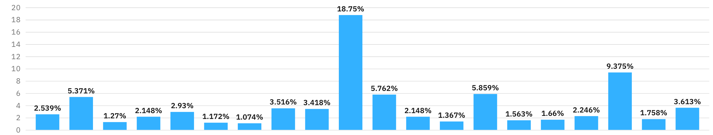
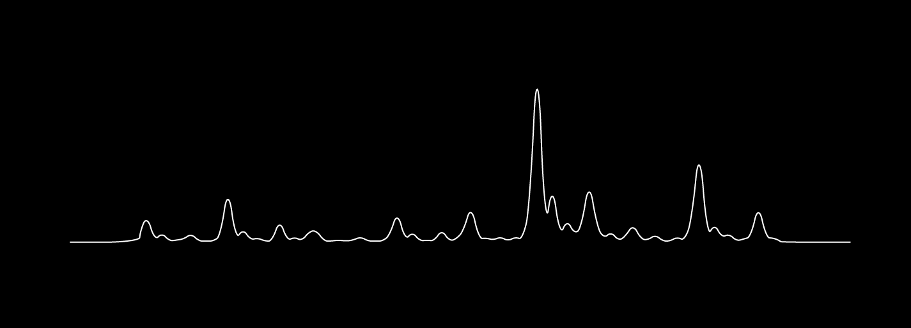
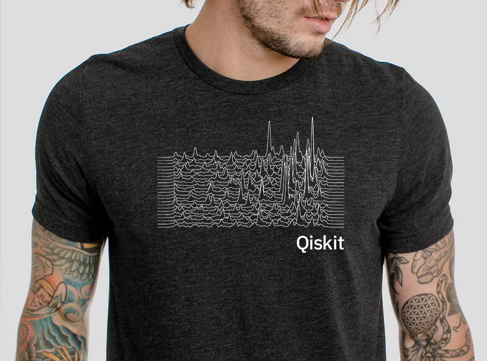
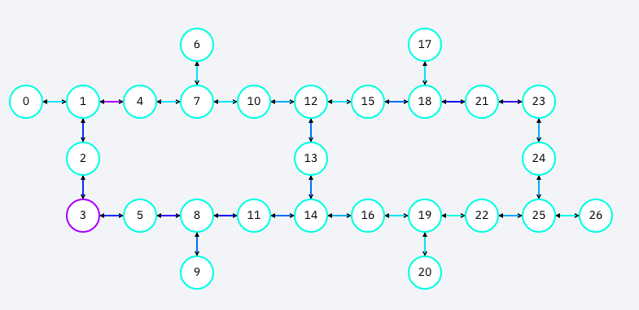
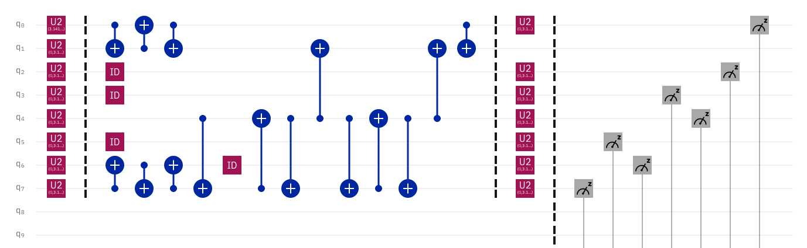

Project Summary
The above demo creates an image with a quantum computer. Even better, the image is a word written by a quantum computer. Each line shows the amplitude of the binary representation of a letter of as an output of the Bernstein-Vazirani algorithm.
Didn't understand that sentence? That's okay. Lets break it down and get into it.
First, lets talk about how quantum computers work a little bit. I'm going to skip some of the fundamentals, as its been said many times by people much more knowledgeable than myself, like this video. For our purposes here, the important part is that unlike regular (or classical) computers, quantum computers are probabilistic. Every time a quantum computer runs an algorithm, there is a probability of getting the correct answer, so quantum algorithms are written in such a way that the "right" answer is amplified when run many times. For example, a typical result from a quantum computer looks something like this.

Whatever the quantum computer was trying to compute, we can see that the right answer is that tall column in the middle. All those other little bars in our histogram are a result noise. Today's quantum computers aren't perfect, so there will be noise in our results. Remember, quantum computers are probabilistic, so incorrect answers will occasionally happen, but in this case, our correct answer is still fairly clear.
So what is it calculating, and what is the answer? Lets add some more data to our histogram.
As you can see, each bar is labeled with a series of 0s and 1s. These are 7 bit binary strings, and our amplified answer is "1010001", which is binary for the letter "Q". As you can see, our quantum computer is amplifying the letter Q, the first letter of Qiskit, which is exactly what we want! (For those really paying attention, text to binary is often written as 8 bits, starting with a 0 or 0b, but more on that later in the FAQs).
From here, I exported the data as a csv and styled it to look like a line from the famous album artwork using Apple Numbers and Adobe Illustrator. The amplitudes may look slightly different because the below image uses all the data provided by the quantum computer, while the above is just a summary.

How did the quantum computer "compute" the letter Q?
That's where the Bernstein-Vazirani algorithm comes in which you can read all about it in depth here. And if you haven't picked up on it yet, I'm calling this "Joy Vazirani" because it styles the data from from the algorithm to look like the Joy Division artwork.
The Bernstein-Vazirani algorithm is a quantum algorithm that contains a black box, called an oracle, and can query the oracle to obtain the solution. The oracle is a series of 0's and 1's, and the quantum computer returns the 0's and 1's as amplitudes. For our purposes, we encode the letters by first converting them to binary (0's and 1's) and then putting them into the oracle. We then ask the quantum computer to find the value of the oracle as a quantum state, which we then measure giving us our amplitudes as shown above.
The resulting circuit amplifies the quantum state that corresponds to our letter. To do a full word (or sentence), the same algorithm will need to be run for each letter. Which is why our "Qiskit" example has 6 lines, each corresponding to a letter of "Qiskit". In the interactive version here, I pre-ran every letter of the alphabet so you can play with it (26 letters, 26 circuits, 26 lines). And basically that's it! I certainly skimmed over some details, but the entire jupyter notebook can be found here, which builds upon the Qiskit implementation as described in the Qiskit textbook here. The primary difference from what is shown in the notebook is that you can enter a string of text, and it will return an array of circuits, corresponding to each letter. The array of circuits can be run all at once with Qiskit as one job, so give it a try!
The source code for the web app is in the same repo here.
For another example, here is a mock up on a shirt that reads "qiskit terra aqua aer ignis".

Frequently asked questions
Why the minor inaccuracies in the amplitudes?
Towards the beginning of the chapter on Bernstein-Vazirani, the Qiskit textbook says "Using a quantum computer, we can solve this problem with 100% confidence after only one call to the function 𝑓(𝑥)." If that is the case, why are there any amplitudes other than the "correct" answer? This is because of noise in quantum systems which causes the little spikes. As an artist, I think that noise is beautiful and adds to the final effect. Once quantum computers are fully fault tolerant, this visual will be a lot more boring. For once, the noise is a good thing.
Why are some letters more accurate than others?
The circuit as it is created by the algorithm above is not the same circuit that gets sent to the actual quantum hardware. Each quantum computer available through IBM Quantum has its individual limitations. Not all qubits are entangled to every other qubit. And not every qubit performs equally. When a job gets sent to run, the circuit gets transpiled to fit on the hardware as efficiently as possible. But not all letters are equally efficient.
In the example above, the circuits were run on "ibmq-paris", which the qubit connectivity looks like the following:

When the circuit for "Q" was transpiled for this hardware, it looks like this:

However, when the circuit for "k" was run, it was transpiled to look like this:
The second circuit is a fair bit longer (or as we say, has a greater depth), which makes it more difficult to maintain accuracy. The longer (in depth) a circuit is, the longer (in time) it takes to execute, which means more opportunity for noise to get into the system. Each letter looks a little different, so some letters will be less accurate than others.
Why only 7 bits instead of 8 to represent a letter?
The less bits used, the more accurate the result. When converting from text to binary in python, the data is prepended with "0b", which is just a computational way of saying "binary is about to follow". In my script I scrape both of these off. If you were to google an ascii to binary table, you would see all text starts with 0. Again, we don't need that, so I scrape it off. Like the above explanation about how circuit depth effects accuracy, so does the number of qubits used, called circuit width. At IBM, we take into consideration both circuit width and depth to account for accuracy, called quantum volume (or QV). For the web app implementation, I ran all circuits on the quantum computer call "ibmq_montreal" with the highest quantum volume, with QV64.
Conclusion
Quantum computing is difficult, but slowly becoming more accessible. It is usually done by scientists and researchers for, well, science and research. But at IBM we're trying to take quantum computing out of the lab and put it in the hands of everyone else with free cloud based tools like IBM Quantum Experience and open source tools like Qiskit. I work for IBM Quantum, but I'm also an artist and I want to show that quantum computers can be used by non-scientists to do things that won't necessarily advance the field of research, but are still valuable. I hope others like me, those without a quantum physics background but are curious and creative, can start learning quantum computing as a method of creative expression. I hope that this blog shows that quantum computing doesn't always have to be about solving the worlds most complex problems, and that those of us who aren't mathematicians can still learn to use quantum computers.
To me, a quantum computer is a paintbrush. It's might be the worlds most complex paintbrush, but I hope this is the beginning of a learning path for using a quantum computer for creative expression.